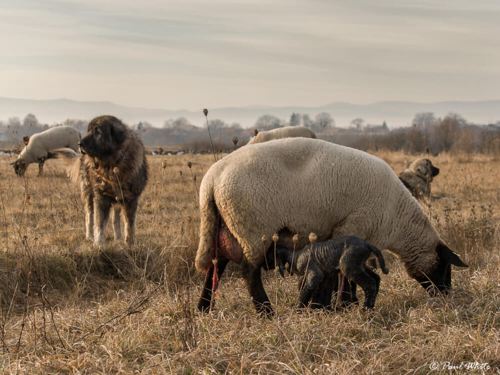
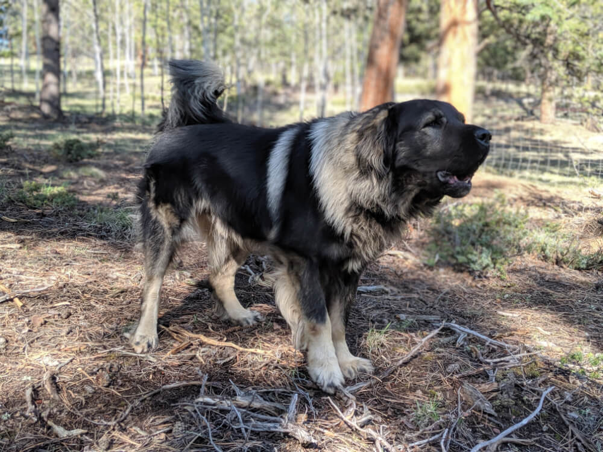
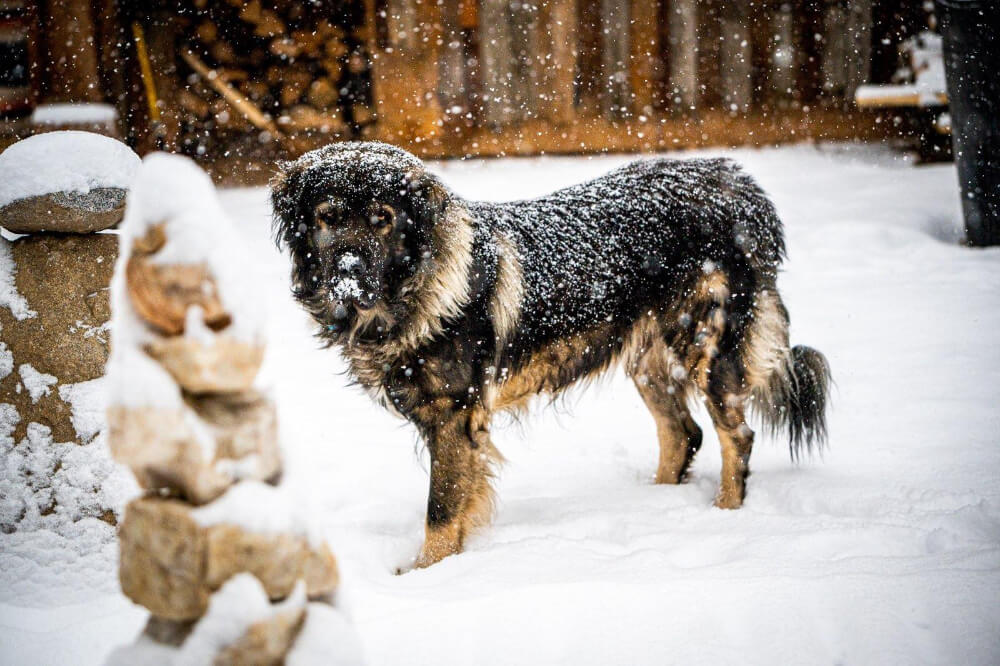

Sarplaninacs have been developed over thousands of years across the mountainous regions of (former) Yugoslavia. These effective livestock guardians have been protecting flocks alongside shepherds for centuries, carefully selected for their loyalty, intelligence, bravery, and their tenderness with the flock/family.
Welcome to Sarplaninacs.com
A place for breed information, history, and other resources for current & to-be owners of Sarplaninacs.

History

Breed Information
Although they are not the largest of the available options when it comes to livestock guardian breeds, the Sarplaninac is characterized as having immense strength, accompanied by a set of large teeth, making it a force to be reckoned with when confronting predatory animals.
Their temperament includes being highly intelligent and independent, extremely loyal to their flock and family members, suspicious of strangers and quick to react if they perceive them a threat, and fearless protectors. While not hesitating to confront any danger, Sarplaninacs are also gentle, calm, and steady guardians of the family and flock.
.jpg)
Gallery
We think that Sarplaninac are as beautiful as they are majestic. Whether working to protect a flock, or a companion and guardian of the family, each Sarplaninac has their own unique personality. This gallery is a place where we like to showcase some of these amazing dogs.
We update our photos often, so if you would like to see your Sarplaninac featured in our gallery, please send us a DM on our Instagram here. We would love to share a photo of your dog!

FAQ
When it comes to Sarplaninacs, there are often many questions regarding this uncommon and rare breed. How do you pronounce "Sarplaninac"? How big do they normally get? How much do you feed a Sarplaninac? Are they good with other livestock besides sheep? Or, perhaps you are considering a Sarplaninac as a companion/family guardian?
This page is here to help answer some of the most common questions you may have when it comes to this hard working breed. We also answer some questions frequently asked about having a Sarplaninac in non-working situations.
© 2021 Mike Lopez | Sarplaninacs.com. All rights reserved.
Made with by Mike Lopez.
Made with by Mike Lopez.